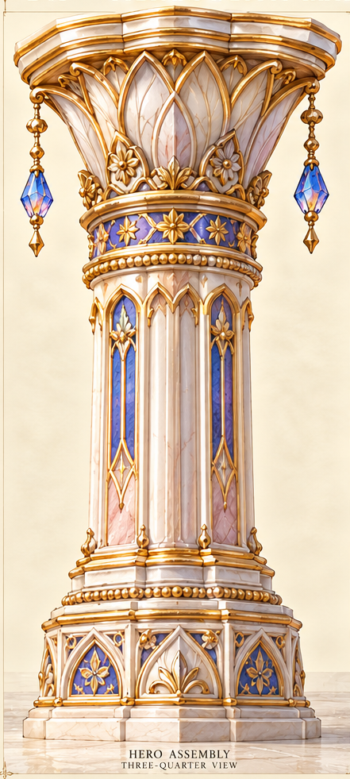
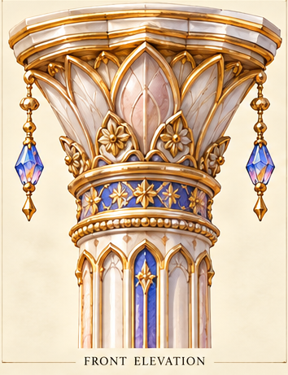
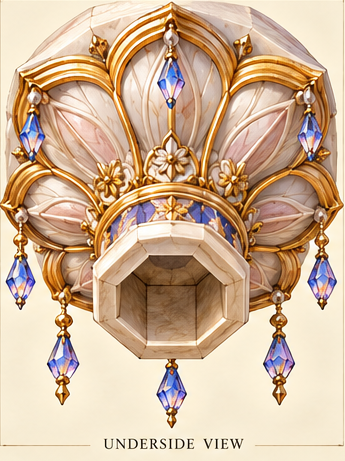
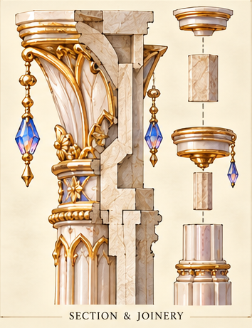
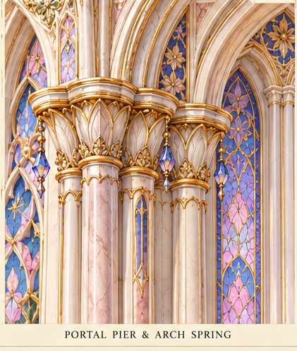
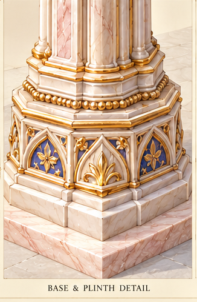
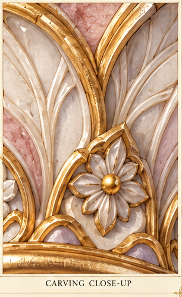

Original column source panels
Seven existing source panels; open one at a time.
Column assembly

Lotus capital front elevation

Lotus capital underside and socket

Column section and joinery

Portal pier and arch springing

Column base and plinth

Leaf carving close-up
